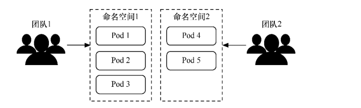
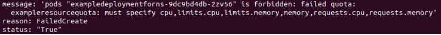
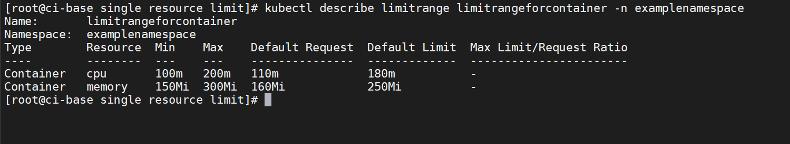

Contents
资源管理-命名空间¶
命名空间（namespace）的主要作用是对Kubernetes集群资源进行划分，这种划分并非物理划分，而是逻辑划分，用于实现多租户的资源隔离。
如果使用Kubernetes的用户很少，可以不使用命名空间。
但如果使用Kubernetes的团队或用户众多，各种资源管理起来就会比较麻烦。这时就应考虑使用命名空间来进行划分，这样集群内部 的各种资源对象就可以在不同的命名空间下进行管理。
使用命名空间划分资源
1.命名空间的基本操作¶
为了创建一个名为examplenamespace的命名空间
# 新建
$ kubectl create namespace examplenamespace
#删除
$ kubectl delete ns examplenamespace
通过模板文件创建命名空间的方式如下。
首先，通过命令创建examplenamespace.yml文件。
apiVersion: v1
kind: Namespace
metadata:
name: examplenamespace
通过模板创建命名空间
$ kubectl apply -f examplenamespace.yml
创建完成后，通过kubectl get namespace命令可以查看各个命名空间
$ kubectl get ns examplenamespace
NAME STATUS AGE
examplenamespace Active 2m7s
除了刚刚创建的命名空间外，我们看到查询结果中还有其他几个命名空间，这些都是Kubernetes的初始命名空间。
default：所有未指定namespace属性的对象都会分配到default命名空间中。
kube-node-lease：主要存放各个节点上的Lease对象，用于节点的心跳检测。
kube-system：所有由Kubernetes系统创建的资源都在这个命名空间中。
kube-public：此命名空间下的资源可以被所有人访问（包括未认证用户）
此时可以在刚才创建的examplenamespace命名空间下创建资源。为了创建一个Pod，首先，使用以下命令创建模板文件。
examplepodforns.yml
apiVersion: v1
kind: Pod
metadata:
name: examplepodforns
namespace: examplenamespace
spec:
containers:
- name: examplepod-container
image: busybox
imagePullPolicy: IfNotPresent
command: ['sh', '-c']
args: ['echo "Hello Kubernetes!"; sleep 3600']
该模板和之前的示例几乎相同，唯一的区别在于，指定了namespace属性，它指向刚刚创建的examplenamespace命名空间。
$ kubectl apply -f examplepodforns.yml
对于某个命名空间下的资源，所有命令（如get、describe、logs、delete等）都必须带上–namespace={命名空间}或-n {命名空间}参数，才能够查询。
$ kubectl get pod -n examplenamespace
NAME READY STATUS RESTARTS AGE
examplepodforns 1/1 Running 0 0s
大多数Kubernetes资源（例如，Pod、Service、控制器等）在命名空间中，但是命名空间资源本身并不在命名空间中，并且低级资源（例如，节点和持久存储卷等）也不在任何命名空间中。
可以使用命令查看哪些Kubernetes资源在命名空间中，哪些不在。
通过$ kubectl api-resources --namespaced=true命令，可以查看位于命名空间下的资源
$ kubectl api-resources --namespaced=true
通过$ kubectl api-resources --namespaced=false命令，可以查看不在命名空间下的资源
$ kubectl api-resources --namespaced=false

2.命名空间中的服务发现¶
命名空间和Service的DNS也有一定关系，之前章节提及过DNS服务发现的方式，其具体访问格式为
{ServiceName}.{Namespace}.svc.{ClusterDomain}。
之前的示例中因为没有使用命名空间，所以{Namespace}填写的都是default。
如果某个Service资源位于某个命名空间下（如刚才创建的examplenamespace命名空间），DNS将会变为
{ServiceName}.examplenamespace.svc.{ClusterDomain}。
通过以下命令，可以查询命名空间的详情。
$ kubectl describe namespace examplenamespace
Name: examplenamespace
Labels: kubernetes.io/metadata.name=examplenamespace
Annotations: <none>
Status: Active
No resource quota.
No LimitRange resource.
使用$ kubectl describe namespace examplenamespace命令可以看到“No
resource quota”（没有资源配额）和“No resource limits”（没有资源限额）
对于某个命名空间，可以分别设置其资源配额（ResourceQuota）和限额范围（LimitRange）
3.命名空间的资源配额¶
命名空间的设计初衷是实现多租户的资源隔离。
这只是逻辑隔离，实际上所有租户都共用同一个Kubernetes集群，所以还需要规划命名空间的资源配额（ResourceQuota），以免某个命名空间滥用集群资源而影响整个Kubernetes集群。
可以通过ResourceQuota来定义资源配额，设置命名空间下能够使用的各类资源总量。
一个命名空间下最多只能存在一个ResourceQuota。
资源配额分为3种类型。
计算资源配额：指定可用的计算机资源总量（如总内存或CPU等）。
存储资源配额：指定可用的存储资源总量（如PVC总数等）。
对象数量配额：指定Kubernetes资源对象的可用总量（如Pod总数和Service总数等）。
资源配额模板的定义如下所示。
template.yaml
apiVersion: v1
kind: ResourceQuota
metadata:
name: string #资源配额名称
namespace: string #所属命名空间
spec:
hard:
#计算资源配额
limits.cpu: number #对于所有非终止状态的Pod，其CPU限额总量不能超过该值
limits.memory: number #对于所有非终止状态的Pod，其内存限额总量不能超过该值
requests.cpu: number #对于所有非终止状态的Pod，其CPU需求总量不能超过该值
requests.memory: number #对于所有非终止状态的Pod，其内存需求总量不能超过该值
cpu: number #等同于requests.cpu
memory: number #等同于requests.memory
#存储资源配额
requests.storage: number #在所有的PVC中，存储资源的需求不能超过该值
persistentvolumeclaims: number #允许存在的PVC数量
{storage-class-name}.storageclass.storage.k8s.io/requests.storage: number #在所有与该storage-class-name相关的PVC中，存储资源的需求不能超过该值
{storage-class-name}.storageclass.storage.k8s.io/persistentvolumeclaims: number #允许与该storage-class-name相关的PVC总量 对象数量配额
configmaps: number #允许存在的ConfigMap数量
pods: number #允许存在的非终止状态的Pod数量。如果Pod的status.phase为Failed或Succeeded那么它处于终止状态
replicationcontrollers: number #允许存在的ReplicationController数量
resourcequotas: number #允许存在的资源配额数量
services: number #允许存在的Service数量
services.loadbalancers: number #允许存在的LoadBalancer类型的Service数量
services.nodeports: number #允许存在的NodePort类型的Service数量
secrets: number #允许存在的Secret数量
为了给命名空间创建一个简单的资源配额，首先，通过命令创建模板文件。
exampleresourcequota.yml
apiVersion: v1
kind: ResourceQuota
metadata:
name: exampleresourcequota
namespace: examplenamespace
spec:
hard:
pods: "2"
services: "1"
persistentvolumeclaims: "4"
接下来，运行以下命令，通过模板创建资源配额。
$ kubectl apply -f exampleresourcequota.yml
创建完成后，通过$ kubectl get resourcequota -n examplenamespace命令可以查看刚刚创建的资源配额。
$ kubectl get resourcequota -n examplenamespace
NAME AGE REQUEST LIMIT
exampleresourcequota 100s persistentvolumeclaims: 0/4, pods: 1/2, services: 0/1
接下来，通过$ kubectl describe resourcequota exampleresourcequota -n examplenamespace命令可以查看具体的资源占用
情况,因为之前已经在examplenamespace命名空间中创建了1个Pod，所以pods的Used属性为1。
$ kubectl describe resourcequota exampleresourcequota -n examplenamespace
Name: exampleresourcequota
Namespace: examplenamespace
Resource Used Hard
-------- ---- ----
persistentvolumeclaims 0 4
pods 1 2
services 0 1
如果此时再通过$ kubectl describe namespace examplenamespace命令查看命名空间的详细信息，可以看到原先的No
resource quota提示已经变成具体的配额，和刚刚我们配置的一模一样
$ kubectl describe namespace examplenamespace
Name: examplenamespace
Labels: kubernetes.io/metadata.name=examplenamespace
Annotations: <none>
Status: Active
Resource Quotas
Name: exampleresourcequota
Resource Used Hard
-------- --- ---
persistentvolumeclaims 0 4
pods 1 2
services 0 1
No LimitRange resource.
此时可以尝试在该命名空间下继续创建Pod。目前Pod的使用量为1，上限为2。接下来，创建一个Deployment控制器并将其副本数设置为2，这样刚好超过上限，多出1个Pod，试试看会发生什么情况。为此，首先，通过命令创建模板文件。
exampledeploymentforns.yaml
apiVersion: apps/v1
kind: Deployment
metadata:
name: exampledeploymentforns
namespace: examplenamespace
spec:
replicas: 2
selector:
matchLabels:
example: deploymentforns
template:
metadata:
labels:
example: deploymentforns
spec:
containers:
- name: nginx
image: nginx:1.7.9
imagePullPolicy: IfNotPresent
ports:
- containerPort: 80
这里的Deployment示例除了指定命名空间为examplenamespace外，和之前的示例没有什么区别，其副本数设置为2。
通过模板创建Deployment控制器。
$ kubectl apply -f exampledeploymentforns.yaml
创建完成后，分别查看Pod创建情况，可以看到Deployment控制器只创建了一个Pod，另一个Pod无法创建，
$ kubectl get pod -n examplenamespace
$ kubectl get deploy -n examplenamespace
$ kubectl describe deploy -n examplenamespace exampledeploymentforns
输出Deployment控制器详情。在输出文本的下半部分可以找到失败的原因是请求的Pod数超出了配额限制
$ kubectl get deploy exampledeploymentforns -n examplenamespace -o yaml
此时如果将Deployment控制器的副本数量设置为1，或者删除旧的Pod，或者更改配额设置为更大的数值，则另一个Pod才会成功创建。
注意：如果在ResourceQuota中设置了任何一种计算机资源配额（cpu、limits.cpu、requests.cpu、memory、limits.memory和 requests.memory属性），那么在创建Pod或控制器时，在Pod模板中也必须明确指定相关的计算机资源属性值（即容器的resources.limits.cpu、resources.limits.memory、resources.requests.cpu、resources.requests.memory属性），或者已经通过LimitRange对象设置默认值；否则，将无法创建，并在创建时将会出现图8-19所示的错误消息。另外，在使用kubectl describe resourcequota命令查询时，计算机资源配额的Used属性其实并非CPU或内存的实时使用值之和，而是在Pod模板中填写的指定值之和。
4.命名空间中单个资源的限额范围¶
通过设置资源配额，可以限定一个命名空间下使用的资源总量。但这仅是总量设置，对于单个资源没有限制，很有可能单个 Pod 或容器就会消耗完整个命名空间下资源配额所指定的CPU 或内存总量。为了避免单个资源对象消耗所有的命名空间资源，可以通过LimitRange对象来对单个资源对象的资源占用量进行限定。
通过LimitRange对象可以实现以下功能。
设置命名空间下单个Pod或容器的最小和最大计算资源使用量。
设置命名空间下单个PVC的最小和最大存储请求。
设置命名空间下请求（request）资源量和上限（limit）资源量的比例。
设置命名空间下默认的计算资源请求与上限，并在运行时自动将其注入容器中。
如果在命名空间下对CPU或内存设置了请求与上限，那么在定义Pod资源时，必须明确在模板中指定这两个值否则，系统会拒绝创建Pod（除非在定义LimitRange 时设置了默认值）。如果在设置LimitRange之前就创建了Pod， 即使之后设置了LimitRange，那么对正在运行的Pod也没有影响，除非Pod重建。
如果在命名空间下设置了PVC请求的存储大小，那么当定义PVC时如果请求的大小不在范围内，系统也会拒绝创建PVC。
4.1 设置容器的限额范围¶
通过设置type为Container的限额范围，可以定义每个容器中最小与最大的内存/CPU限制，以及默认的内存/CPU请求及限制。首先，通过命令创建limitrangeforcontainer.yml文件。
apiVersion: v1
kind: LimitRange
metadata:
name: limitrangeforcontainer
namespace: examplenamespace
spec:
limits:
- max:
cpu: "200m"
memory: "300Mi"
min:
cpu: "100m"
memory: "150Mi"
default:
cpu: "180m"
memory: "250Mi"
defaultRequest:
cpu: "110m"
memory: "160Mi"
type: Container
接下来，运行以下命令，通过模板创建限额范围。
$ kubectl apply -f limitrangeforcontainer.yml
创建完成后，可以通过$ kubectl get limitrange -n examplenamespace命令查看限额范围
$ kubectl get limitrange -n examplenamespace
NAME CREATED AT
limitrangeforcontainer 2022-04-19T06:52:29Z
也可以通过$ kubectl describe limitrange limitrangeforcontainer -n examplenamespace命令查看限额范围的详情，
可以看到LimitRange创建后关于容器的计算资源限额范围的详情。
从图中可以看到容器CPU及内存的Min和Max属性，这表示最小资源限制与最大资源限制。LimitRange生效之后，当创建Pod模板或填写控制器的Pod模板时，各个容器的resources.limits和resources.requests属性必须要满足指定Min/Max条件的资源限制，否则无法成功创建。本例中必须满足的条件如下所示。
100m≤容器的resources.requests.cpu≤容器的resources.limits.cpu≤200m
150MiB≤容器的resources.requests.memory≤容器的resources.limits. memory≤300MiB
defaultRequest属性和defaultLimit属性分别代表默认请求值和默认限制值。在创建Pod模板或填写控制器的Pod模板时，如果没有显式指定resources.limits和resources.requests属性，则在创建时会自动将其填充为LimitRange中的默认值。
在本例中默认值如下所示。
容器默认resources.limits.cpu = 180m。
容器默认resources.limits.memory = 250Mi。
容器默认resources.requests.cpu = 110m。
容器默认resources.requests.memory = 160Mi。
4.2 设置Pod的限额范围¶
可以设置type为Pod的限额范围，定义Pod中全部容器的内存/CPU限额总和的最小值以及最大值。首先，通过命令创建limitrangeforpod.yml文件。
limitrangeforpod.yml
apiVersion: v1
kind: LimitRange
metadata:
name: limitrangeforpod
namespace: examplenamespace
spec:
limits:
- max:
cpu: "1"
memory: "600Mi"
min:
cpu: "100m"
memory: "150Mi"
type: Pod
运行以下命令，通过模板创建限额范围。
$ kubectl apply -f limitrangeforpod.yml
接下来，通过$ kubectl describe limitrange limitrangeforpod - n examplenamespace命令查看限额范围的详情
$ kubectl describe limitrange limitrangeforpod -n examplenamespace
Name: limitrangeforpod
Namespace: examplenamespace
Type Resource Min Max Default Request Default Limit Max Limit/Request Ratio
---- -------- --- --- --------------- ------------- -----------------------
Pod cpu 100m 1 - - -
Pod memory 150Mi 600Mi - - -
可以看到Pod的CPU及内存的Min和Max属性，这表示Pod最小与最大资源限制。LimitRange生效之后，当再次创建Pod模板或填写控制器的Pod模板时，必须使各个容器的resources.limits属性总和满足资源限制，否则无法成功创建。本例中必须满足的条件如下所示。
100m≤Pod模板中所有容器的resources.limits.cpu总和≤1
150MiB≤Pod模板中所有容器的resources.limits.memory总和≤600MiB
4.3 设置PVC的限额范围¶
可以设置type为PersistentVolumeClaim的限额范围，定义PVC的最小与最大存储量。首先，通过命令创建limitrangeforpvc.yml文件。
limitrangeforpvc.yml
apiVersion: v1
kind: LimitRange
metadata:
name: limitrangeforpvc
namespace: examplenamespace
spec:
limits:
- type: PersistentVolumeClaim
max:
storage: 1Gi
min:
storage: 200Mi
运行以下命令，通过模板创建限额范围。
$ kubectl apply -f limitrangeforpvc.yml
接下来，通过$ kubectl describe limitrange limitrangeforpvc -n examplenamespace命令查看限额范围的详情。
$ kubectl describe limitrange limitrangeforpvc -n examplenamespace
Name: limitrangeforpvc
Namespace: examplenamespace
Type Resource Min Max Default Request Default Limit Max Limit/Request Ratio
---- -------- --- --- --------------- ------------- -----------------------
PersistentVolumeClaim storage 200Mi 1Gi - - -
可以看到PVC存储资源的Min和Max属性。LimitRange生效之后，当再次创建PVC模板或填写StatefulSet的存储卷申请模板（volumeClaimTemplate）时，必须使PVC的resources.requests.storage属性满足资源限额范围，否则无法成功创建。
本例中必须满足的条件如下所示。
200MiB≤PVC模板中的resources.requests.storage属性≤1GiB
4.4 设置Pod或容器的比例限额范围¶
可以对Pod或容器设置请求资源量和上限资源量的比值。对于Pod来说，这是Pod模板中所有容器的resources.limits.cpu或memory的总和与所有容器的resources. requests.cpu或memory的总和之比；
而对于容器来说，这是单个容器的resources. limits.cpu或memory与自身的resources.requests.cpu或memory之比。
这里我们以Pod中的memory限额范围为例进行介绍。
limitrangeforratiopod.yml
apiVersion: v1
kind: LimitRange
metadata:
name: limitrangeforratiopod
namespace: examplenamespace
spec:
limits:
- maxLimitRequestRatio:
memory: "2"
type: Pod
运行以下命令，通过模板创建限额范围。
$ kubectl apply -f limitrangeforratiopod.yml
接下来，通过$ kubectl describe limitrange limitrangeforratiopod -n examplenamespace命令查看限额范围的详情。
$ kubectl describe limitrange limitrangeforratiopod -n examplenamespace
Name: limitrangeforratiopod
Namespace: examplenamespace
Type Resource Min Max Default Request Default Limit Max Limit/Request Ratio
---- -------- --- --- --------------- ------------- -----------------------
Pod memory - - - - 2
可以看到LimitRange创建后关于Pod存储资源限额范围的详情。
可以看到Pod内存资源的Max Limit/Request Ratio属性。LimitRange生效之后，当再次创建Pod模板或填写控制器的Pod模板时，必须使Pod的resources.requests属性和resources.limit属性满足比例限制，否则无法成功创建。
本例中必须满足的条件如下所示。
Pod 模板中所有容器的resources.limits.memory总和 = Pod模板中所有容器的resources.requests.memory总和 × 2
可以通过查看命名空间的详情统一查看创建的多个限额范围。本例中的具体命令为kubectl describe namespace examplenamespace。可以看到原先的“No
resource limits”提示已经变成具体的限额范围，这和刚刚我们配置的一模一样，
$ kubectl describe namespace examplenamespace
Name: examplenamespace
Labels: kubernetes.io/metadata.name=examplenamespace
Annotations: <none>
Status: Active
Resource Quotas
Name: exampleresourcequota
Resource Used Hard
-------- --- ---
persistentvolumeclaims 0 4
pods 2 2
services 0 1
Resource Limits
Type Resource Min Max Default Request Default Limit Max Limit/Request Ratio
---- -------- --- --- --------------- ------------- -----------------------
Container memory 150Mi 300Mi 160Mi 250Mi -
Container cpu 100m 200m 110m 180m -
Pod memory 150Mi 600Mi - - -
Pod cpu 100m 1 - - -
PersistentVolumeClaim storage 200Mi 1Gi - - -
Pod memory - - - - 2